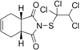

captafol

Definition: Captafol is a fungicide. It is used to control almost all fungal diseases of plants except powdery mildews. It is believed to be a human carcinogen, and production for use as a fungicide in the United States stopped in 1987. Its continued use from existing stocks was allowed, but in 1999 the Environmental Protection Agency banned its use on all crops except onions, potatoes, and tomatoes. In 2006 even these exceptions were disallowed, so currently its use on all crops is banned in the United States. Several other countries have followed suit since 2000, and as of 2010, no countries are known to allow the use of captafol on food crops. Currently, the National Institute for Occupational Safety and Health established a recommended exposure limit of 0.1 mg/m3 for dermal exposures.Captafol was disclosed in US patent 3,178,447 (1965). Its synergistic mixture with thiabendazol was described in US patent 4092422 (1978).International trade in captafol is regulated by the Rotterdam Convention.
Source: Wikipedia
Wikipedia Page (Something wrong with this association? Let us know.)
Wikidata Page (Something wrong with this association? Let us know.)